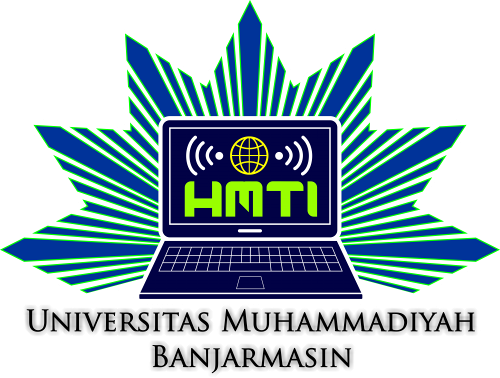

Program Studi S1 Informatika
Universitas Muhammadiyah Banjarmasin menghadirkan Program Studi Informatika yang memilki keunggulan akademik dan profesional dengan mengintegrasikan nilai-nilai islam, dalam ilmu pengetahuan, teknologi dan seni untuk menjawab tantangan dan kebutuhan para stakeholder, melalui misi :
- Melaksanakan kegiatan akademik dan profesi yang inovatif, sistematis dan komprehensif berdasarkan ketakwaan berdasarkan ketakwaan terhadap Tuhan Yang Maha Esa dan kecintaan terhadap tanah air untuk pengembangan profesionalisme dan karakter peserta didik
- Melakukan inovasi dalam kegiatan penelitian dasar dan terapan untuk kemajuan ilmu pengetahuan, teknologi dan seni (IPTEKS)
- Menyebarluaskan hasil kajian dan inovasi bidang Informatika melalui partisipasi dalam pengabdian kepada masyarakat
- Mengelola pendidikan bidang Informatika secara efektif dan efisien dalam suasana akademik yang islami dan bermartabat
Keunggulan Program Studi Informatika
- Kurikulum dan Silabus mata kuliah terupdate sesuai dengan kebutuhan para Stakeholder
- Proses belajar dilakukan dengan cara yang inovatif dan kreatif dengan melibatkan mahasiswa secara aktif
- Mahasiswa diajarkan tentang pengetahuan, konsep, dan kemampuan dalam pembuatan software, baik berbasis web maupun dekstop
- Pembimbingan penuh di Lab.Komputer agar Mahasiswa dapat memahami secara langsung pengembangan software serta pengelolaan jaringan komputer
----STRUKTUR KURIKULUM----
-
[Sustainable Development]
[Calculus]
[Interpersonal Comunications]
[Algorithm Proggramming]
-
[Civic Education]
[Digital System]
[Linear Algebra and Matrice]
[Computer Architecture]
[Data Strucure]
-
[Computer Application]
[Fundamental Statistic]
[Database]
[Static Web Programming]
[Objet-Oriented Programming]
-
[Human-Computer Interaction]
[Decision Support System]
[Operating System]
[Computer Network]
[Visual Programming]
-
[Software Engineering]
[Image Processing]
[Data Security]
[Wireless Networks]
[Dynamic Web Programming]
-
[Research Methodology]
[Articial Intelegence]
[Web and Network Security]
Elective : [Mobile Device Programming][Data Mining] [Geographic Information Systems]
-
[Professional Law and Ethics]
[Internship]
[Digital Game Design]
Elective : [Digital Forensic] [Biometrics]
Consentration : [Network Eng.] [Web Development]
-
[Field Work Experience]
[Final Project]
**Mahasiswa Angkatan Pertama**
| No |
Nama Mahasiswa |
| 1. |
Ahmad Alhabsy |
| 2. |
Ahmad Fiqri |
| 3. |
Akhmad Rusady |
| 4. |
Fazriansyah |
| 5. |
Muhammad Fredly Andri |
| 6. |
Muhammad Rifa'i |
| 7. |
Nia Sapitri |
| 8. |
Nina Murdiana |
| 9. |
Ramadhani |
| 10. |
Rizal Pratama Wijaya |
| 11. |
Rizkya Amini |
| 12. |
Sandra Lara Eka Aryani Ayu Agustin |
| 13. |
Siti Ratna Sari |
| 14. |
Zahra Tun Nupus |
Himpunan Mahasiswa Teknik Informatika Universitas Muhammadiyah Banjarmasin
Selain perkuliahan di Informatika juga ada organisasi mahasiswa yang membantu mahasiswa program studi tersebut dalam bidang bidang tertentu termasuk dalam mengembangkan bakat.
Himpunan Mahasiswa adalah kumpulan mahasiswa yang ingin belajar dan berbagi dalam berbagai pengalaman yang kemudian dikembangkan dalam suatu organisasi mahasiswa. Teknik adalah fakultas yang menaungi program studi. Informatika adalah nama atau sebutan dari program studi yang bersangkutan.Universitas Muhammadiyah Banjarmasin merupakan instansi perguruan tinggi muhammadiyah yang menaunginya. Sehingga disingkat menjadi HMTI UM Banjarmasin.
" Program Studi Informatika UM Banjarmasin memiliki keunikan tersendiri dengan mengintegrasikan pengetahuan dalam bidang Informatika dengan nilai-nilai Islami"
" Kuliah di Informatika UM Banjarmasin sangat menyenangkan dengan tenaga pengajar yang masih muda namun sangat berkompeten dibidangnya"